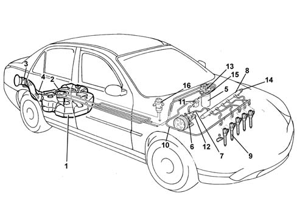

Composition
- Path
- Descriptions > 10 ENGINE > 1040 FUEL TANK AND PIPES > Composition
- Kind
- system description
- Applies to
- engines: 2.4 JTD 20V; all production periods
- Interactive page
- https://sloeber94.github.io/elrnDB-lThss/en/#/840409
Applies to: engines: 2.4 JTD 20V; all production periods
STRUCTURE
The fuel system is divided into a low pressure circuit and a high pressure circuit.
The low pressure circuit consists of:
- an auxiliary pump immersed in the tank
- the fuel filter
- the fuel return manifold pipe
- the connecting pipes.
The high pressure circuit consists of:
- the pressure pump
- the single fuel manifold pipe
- the injectors
- the connecting pipes
FUEL SUPPLY SYSTEM

- 1. Fuel tank
- 2. Submerged fuel assembly complete with level gauge control
- 3. Fuel filler pipe
- 4. Reflux pipe
- 5. Fuel filter filter element
- 6. High pressure pump
- 7. High pressure pipes
- 8. Single fuel manifold pipe
- 9. Injectors
- 10. Pipe from injectors to fuel return manifold pipe
- 11, Fuel return manifold pipe
- 12, High pressure regulator
- 13. Fuel temperature sensor
- 14. Fuel high pressure sensor
- 15. Fuel heater
- 16, Inertia switch